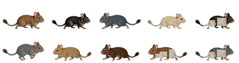

Taskbar Pet
A transparent always-on-top pet layer designed to stay near the taskbar.
A small Windows desktop pet app. Pixel-art degus walk above the taskbar, react to typing, and can pause for wheel-running.

DeguDesktop.exe.
A transparent always-on-top pet layer designed to stay near the taskbar.
Switch between 1, 2, 3, or 5 degus from the tray menu.
Includes agouti, black, blue-gray, gray, cream, chocolate, and pied coats.
The download link points to the zip generated for this static Pages site and GitHub Releases.